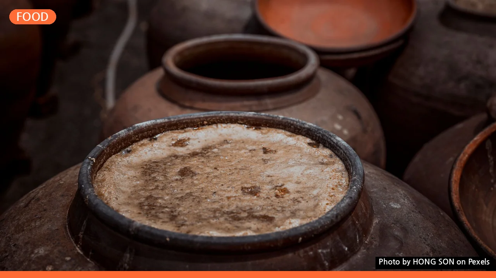

약주와 청주, 뭐가 다를까? 초보자도 쉽게 이해하는 핵심 차이
사진: HONG SON / Pexels (무료 이미지, 출처 표기)
약주와 청주, 근본적인 차이는 '첨가물'
우리 전통주인 약주와 청주, 이름은 들어봤지만 정확히 어떤 차이가 있는지 헷갈리셨나요? 단순히 '약'자가 붙었으니 몸에 좋은 술이라고만 생각하셨을 수도 있습니다. 가장 핵심적인 차이는 바로 '약재의 첨가 여부'입니다. 주세법에 따르면, 청주는 쌀, 누룩, 물만을 사용하여 발효시킨 후 걸러낸 맑은 술을 의미합니다. 반면 약주는 청주에 한약재, 곡물, 꽃잎 등 다양한 약재를 첨가하여 약성이 나도록 빚은 술을 말합니다. 즉, 약재가 들어가면 약주, 들어가지 않으면 청주라고 구분할 수 있습니다. 일부 약주는 청주를 기본으로 약재를 침출하는 방식으로 만들기도 합니다.
제조 과정으로 본 약주와 청주
두 술 모두 쌀과 누룩, 물을 이용해 빚는다는 점에서 기본적인 제조 과정은 유사합니다. 먼저 쌀을 깨끗이 씻어 불리고 찐 후, 누룩과 물을 섞어 발효시키는 과정을 거칩니다. 이 과정에서 쌀의 전분이 당으로, 당이 알코올로 변하는 것이죠.
청주는 이렇게 발효된 술덧(술 밑, 술 재료가 혼합된 형태)을 걸러내 맑은 액체만 취합니다. 숙성을 거쳐 더욱 깨끗하고 깊은 맛을 낼 수 있습니다. 약주는 청주와 동일하게 기본 술을 빚은 후, 발효나 숙성 단계에서 다양한 약재를 함께 넣거나, 완성된 청주에 약재 추출물을 더해 만듭니다. 이 약재의 종류와 투입 시기에 따라 약주마다 고유한 특색이 나타납니다.
맛과 향, 즐기는 방법은 어떻게 다를까?
약주와 청주는 첨가물과 제조 방식의 차이로 인해 맛과 향, 그리고 즐기는 방법에도 분명한 차이가 있습니다.
청주는 쌀 자체의 은은한 단맛과 깔끔한 산미가 특징입니다. 맑고 투명하며, 곡물의 향이 섬세하게 느껴집니다. 대개 차게 마시는 것이 일반적이며, 회나 해산물처럼 담백하고 섬세한 맛의 음식과 잘 어울립니다. 음식 본연의 맛을 해치지 않고 입안을 개운하게 정리해주는 역할을 합니다.
약주는 첨가된 약재에 따라 맛과 향이 매우 다채롭습니다. 달콤하고 향긋한 꽃향이 나는가 하면, 쌉쌀한 약재의 맛이 느껴지기도 합니다. 일반적으로 청주보다 맛과 향이 진하며, 약재 특유의 풍미가 강하게 배어 있습니다. 상온에서 즐기거나 따뜻하게 데워 마시는 약주도 많습니다. 한정식, 보양식, 그리고 기름진 음식과 궁합이 좋습니다.
약주와 청주, 어떤 상황에 어울릴까?
두 전통주는 그 특색만큼이나 어울리는 상황과 문화적 쓰임새도 다릅니다.
- 청주는 맑고 깨끗한 이미지가 강해 격식 있는 자리나 손님 접대에 자주 활용됩니다. 특히 제사나 차례 등 전통 의례에서는 '정종'이라는 이름으로 제례주(제사에 쓰는 술)로 많이 사용됩니다. 또한, 비린 맛을 잡고 풍미를 더하는 요리용 술로도 폭넓게 쓰입니다.
- 약주는 약재의 효능을 기대하며 건강을 생각하는 자리에서 선택되곤 합니다. 특히 귀한 분께 선물하거나 특별한 날에 함께 즐기기 좋습니다. 특정 약재가 주는 의미를 담아 감사나 건강을 기원하는 마음을 전하는 데도 적합합니다.
좋은 약주/청주 고르는 법과 보관 팁
내 취향에 맞는 좋은 전통주를 선택하고 신선하게 즐기기 위한 몇 가지 팁을 알려드립니다.
좋은 술 고르는 법:
- 원료 확인: 쌀의 품종, 누룩의 종류, 약재의 원산지를 확인하면 술의 품질을 짐작할 수 있습니다. 공식 웹사이트나 제품 라벨에서 정보를 꼼꼼히 살펴보세요.
- 투명도 및 색깔: 청주의 경우 맑고 투명하며 침전물이 적은 것이 좋습니다. 약주는 약재의 종류에 따라 색이 다를 수 있지만, 너무 탁하거나 이물질이 많지 않은 것을 고르는 것이 일반적입니다.
- 향: 인위적인 향보다는 자연스럽고 은은한 곡물향(청주)이나 약재향(약주)이 나는 것을 선택하세요.
- 제조사 정보: 신뢰할 수 있는 제조사의 제품을 선택하는 것이 중요합니다. 전통을 이어가는 장인의 술이나 HACCP(식품안전관리인증기준) 인증을 받은 곳의 제품은 품질 면에서 더욱 믿을 수 있습니다.
올바른 보관 팁:
- 서늘하고 어두운 곳: 직사광선을 피해 서늘하고 어두운 곳에 보관하는 것이 가장 좋습니다. 빛과 온도는 술의 품질을 저하시키는 주요 원인입니다.
- 냉장 보관: 개봉하지 않은 경우에도 장기 보관 시에는 냉장 보관을 권장합니다. 특히 개봉 후에는 공기와의 접촉으로 산화가 시작되므로 반드시 냉장 보관하고 가급적 빨리 마시는 것이 좋습니다. 2026년 10월 기준으로 대부분의 약주 및 청주 제품은 개봉 후 1주일 이내 음용을 권장하고 있습니다. 정확한 사항은 공식 홈페이지나 해당 기관에서 다시 확인하시길 권장합니다.
약주와 청주, 자주 묻는 질문
독자들이 궁금해할 만한 몇 가지 질문에 대한 답을 정리했습니다.
Q. 약주와 청주의 알코올 도수는 비슷한가요?
A. 네, 대부분의 약주와 청주는 13~16% 내외로 비슷한 도수를 가집니다. 하지만 제품에 따라 10% 미만의 저도주나 18% 이상의 고도주도 있으니, 구매 전 라벨의 도수 정보를 확인하는 것이 좋습니다.
Q. 제사주로는 주로 어떤 것을 사용하나요?
A. 전통적으로는 맑고 깨끗한 청주를 제사주로 많이 사용합니다. '정종'이라는 이름으로 불리는 일본식 청주를 사용하기도 했지만, 요즘은 국산 청주나 약재가 들어가지 않은 전통 청주를 선호하는 추세입니다. 약주도 제례주로 사용할 수 있으나, 약재 향이 강해 호불호가 갈릴 수 있습니다.
Q. 약주와 청주 모두 '전통주'에 포함되나요?
A. 네, 맞습니다. 약주와 청주 모두 전통적인 방법으로 빚어지는 한국의 '전통주'에 속합니다. 정부에서는 전통주 산업 활성화를 위해 다양한 지원 정책을 펼치고 있으며, 온라인 구매나 면세 혜택 등도 제공하고 있습니다.
🔗 이 글도 함께 보면 좋아요: 대출 막히기 전에 DSR 꼭 확인하세요: 초보자를 위한 핵심 가이드
관련 추천 상품
한국 전통주, 약주 청주, 우리술 선물 관련 인기 상품 보러가기
이 포스팅은 쿠팡 파트너스 활동의 일환으로, 이에 따른 일정액의 수수료를 제공받습니다.